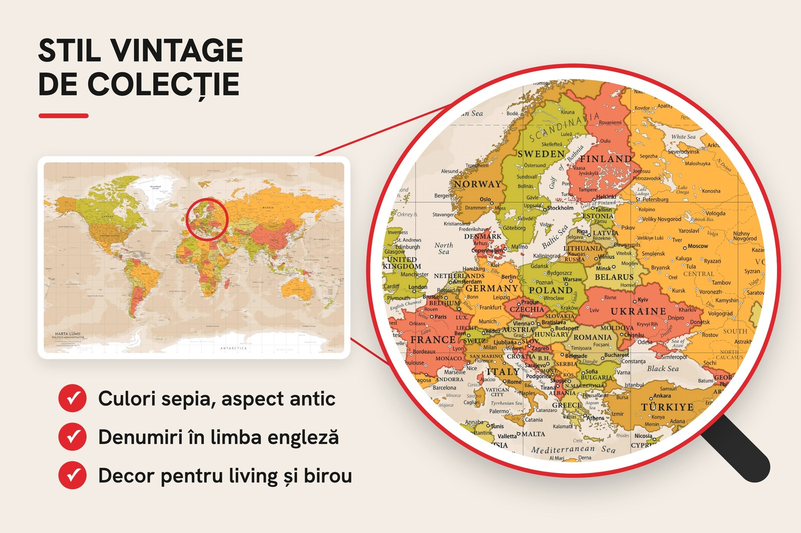
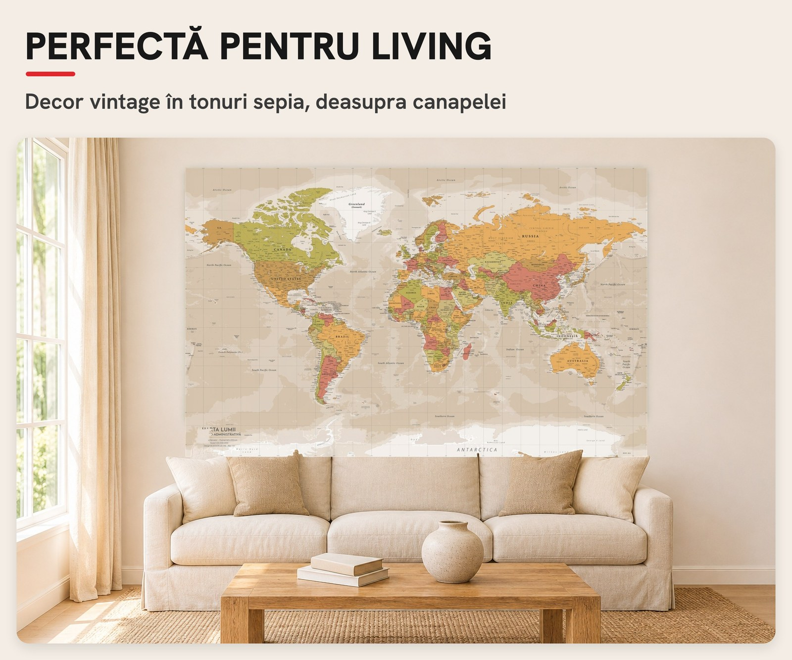
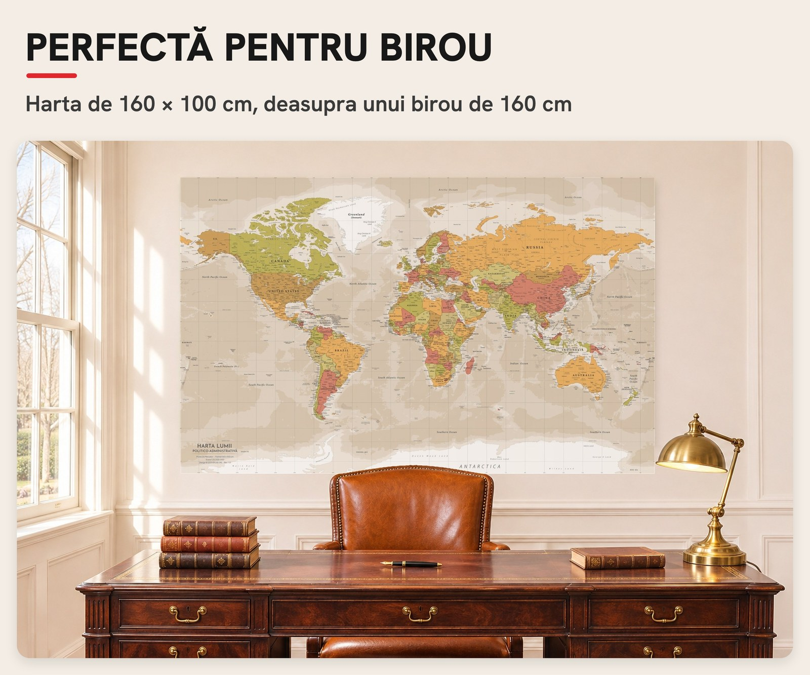
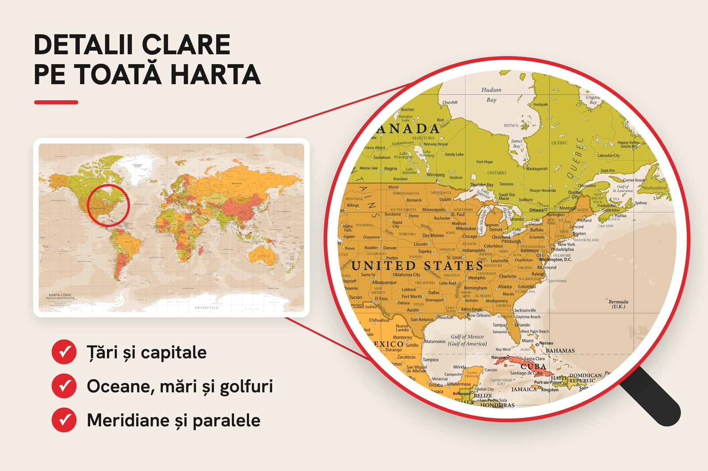
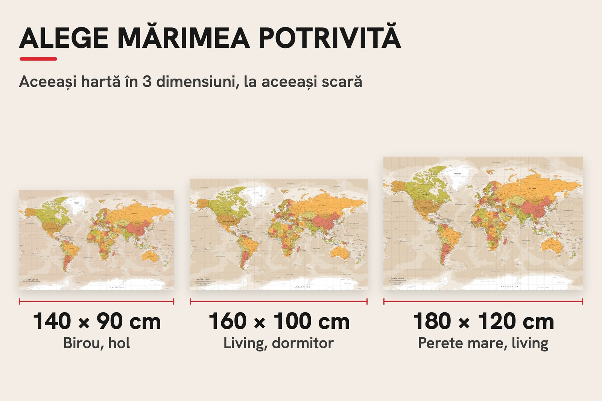
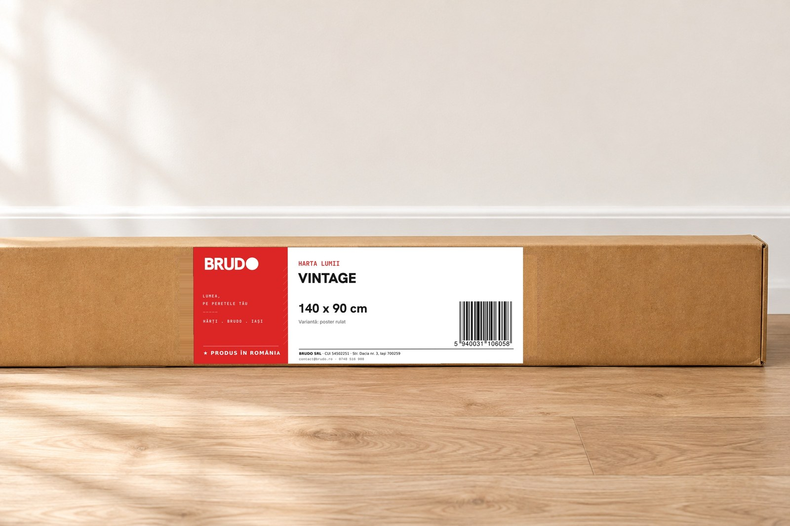
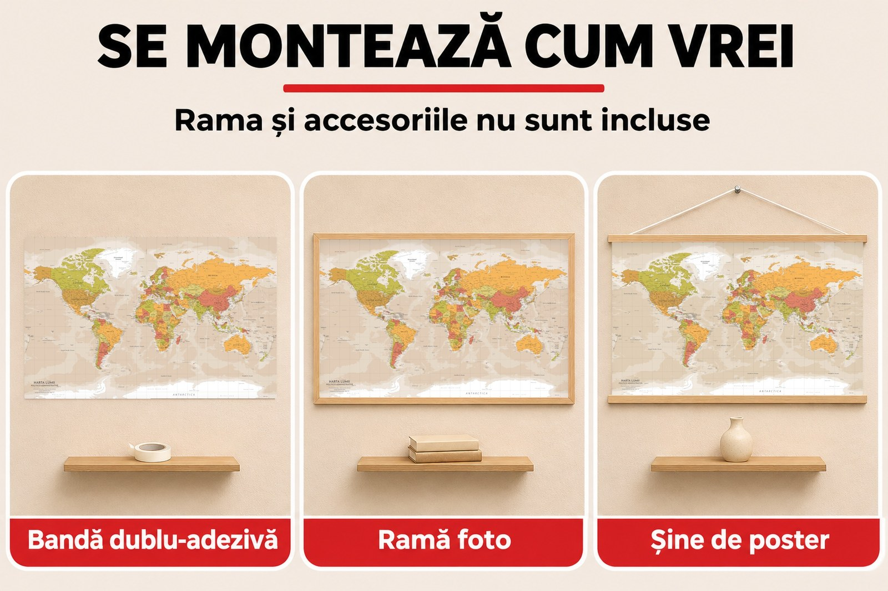

Descriere
Harta lumii de perete vintage – harta politica a lumii in stil antic, in engleza
Harta Lumii Vintage BRUDO este o harta politica a lumii in stil antic de colectie, in tonuri sepia si crem, tiparita pe PVC flexibil si impermeabil. Mapamondul arata tarile lumii cu granitele, capitalele si orasele principale, cu denumiri in limba engleza. Este o harta a lumii de perete mare, aleasa in primul rand ca decor: un poster decorativ vintage pentru living, birou sau biblioteca si o idee de cadou cu personalitate.
- Stil: harta vintage inspirata din atlasele vechi, aspect antichizat, tonuri calde sepia-crem.
- Continut: tari si granite, capitale, orase principale, oceane si mari.
- Rezistenta: PVC mat, rezistent la apa; se sterge cu o laveta umeda.
- Dimensiuni: 140x90 cm, 160x100 cm si 180x120 cm (harta lumii foarte mare).
- Livrata rulata, fara urme de indoire, in cutie de carton gata de oferit cadou.

Un decor vintage care schimba atmosfera incaperii
Unele obiecte completeaza un decor. Altele transforma complet atmosfera unei incaperi. Aceasta harta a lumii in stil vintage a fost creata pentru cei care isi doresc mai mult decat o simpla reprezentare geografica: o piesa decorativa inspirata de hartile clasice de colectie, care aduce rafinament, caldura si caracter oricarui spatiu.
Cu o dimensiune generoasa, aceasta harta a lumii pentru perete devine rapid punctul de atractie al incaperii. Se integreaza armonios in numeroase stiluri de amenajare, de la interioare clasice pana la decoruri industriale, rustice sau moderne, si completeaza la fel de bine un birou, un living sau un colt de lectura.
Aspectul sau artistic o apropie mai mult de un tablou geografic decat de o simpla harta, motiv pentru care este apreciata atat de iubitorii de design interior, cat si de pasionatii de calatorii.


Harta politica a lumii vintage, detaliata si usor de citit
Inspirata din vechile atlase si documente cartografice, harta impresioneaza prin stilul clasic si prin atentia acordata fiecarui detaliu, de la granite si capitale pana la nuantele calde, sepia-crem. Tonurile calde si aspectul antichizat creeaza o ambianta placuta si relaxanta, potrivita pentru zonele de zi si pentru spatiile dedicate lecturii, muncii sau relaxarii.

Harta lumii din PVC impermeabil, lavabila si rezistenta
- PVC flexibil cu densitate ridicata, care nu se indoaie si nu se rupe ca posterele din hartie;
- rezistenta la apa: se sterge cu o laveta umeda;
- print digital UV care pastreaza culorile pe termen lung;
- finisaj mat, fara reflexii deranjante.

Harta lumii mare: 140x90, 160x100 sau 180x120 cm
- 180 × 120 cm – harta lumii foarte mare, piesa centrala pentru pereti spatiosi, birouri si sali de conferinta.
- 160 × 100 cm – format extra-large pentru living sau birou.
- 140 × 90 cm – varianta echilibrata, mai mare decat formatul clasic 100x70.

Idee de cadou: harta lumii vintage in cutie
Un obiect decorativ cu personalitate are un impact mult mai mare decat un cadou obisnuit. Harta lumii vintage este o optiune inspirata pentru:
- aniversari si sarbatori;
- mutarea intr-o locuinta noua sau inaugurarea unui birou;
- absolvire;
- persoane pasionate de calatorii, geografie si istorie;
- colectionari de obiecte decorative.
Este apreciata atat de femei, cat si de barbati, indiferent de varsta, si devine o amintire care ramane ani de-a randul pe perete.

Cum se prinde harta lumii pe perete
Harta nu are sipci si nu include un sistem de prindere. Majoritatea clientilor o prind cu banda dublu-adeziva; arata foarte bine si intr-o rama pentru poster sau pe sine de poster.

Intrebari frecvente
- In ce limba este harta? Denumirile sunt in limba engleza.
- Se poate curata? Da, PVC-ul este rezistent la apa si se sterge cu o laveta umeda.
- Se indoaie la livrare? Nu, harta vine rulata, in cutie de carton.
- Include sistem de prindere? Nu; recomandam banda dublu-adeziva.
Harta Lumii Vintage BRUDO depaseste rolul unui simplu obiect decorativ: este o harta de colectie care spune o poveste despre calatorii, eleganta si pasiunea pentru descoperirea lumii.